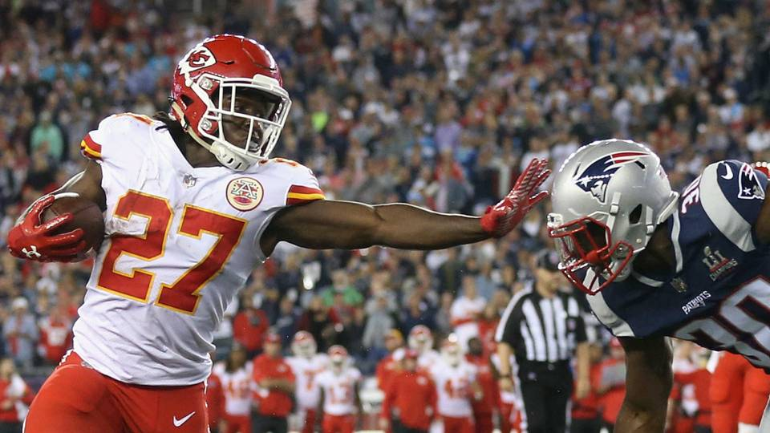
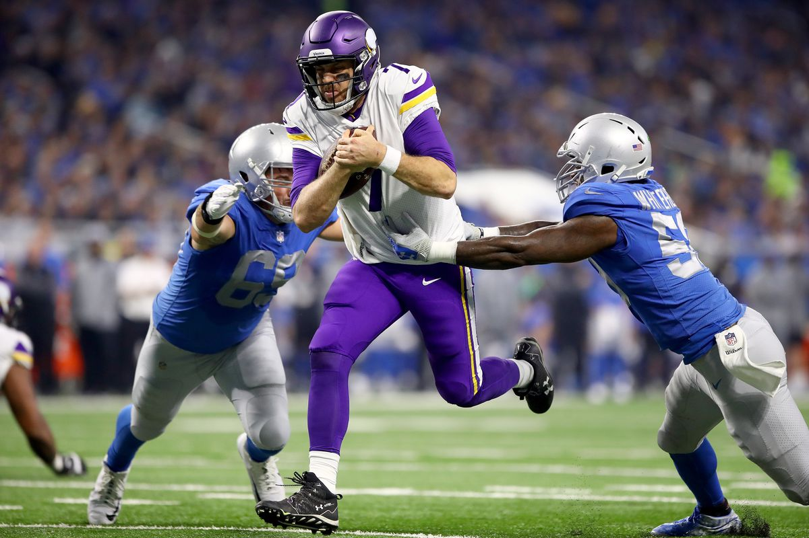
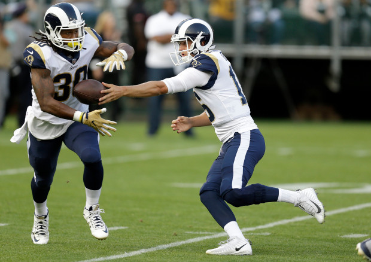
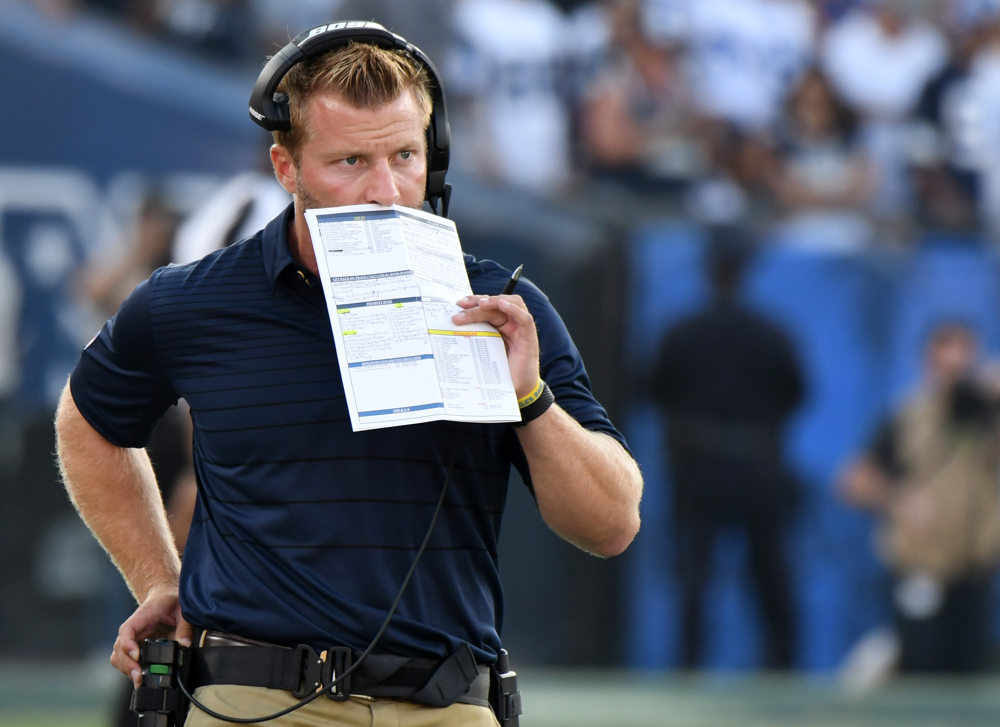

      <div class="post-size">

      <div class="w3-light-blue w3-light-grey w3-margin w3-padding-large">
        <div class="w3-center">
          <h3>Top 3 Positive Surprises in the 2017 NFL Season</h3>
          <h5><span class="w3-opacity">Jan 5, 2018</span></h5>
        </div>

        <div class="w3-justify">
          <p>The 2017 NFL Season has passed by, and as we prepare for playoffs to begin, one can't help but reminisce about what a great year of football we had. Sure, the season was plagued by political issues and fan attendance problems at times, but the quality of football played by the teams and the intensity with which they competed only improved. As with every season, some of the standout performances headlining the year came from the most unexpected sources. As a way of bidding adieu to the season, it's nice to countdown and see what were the most unpredictable wonders through the year. </p>
          <h4>3. Kareem Hunt and the Kansas City Chiefs</h4>
          <p>The Chiefs currenty tote a 10-6 record, clinching the 4th seed in the AFC and setting themselves for a clash with the Tennessee Titans in the Wild Card match. This success was not unprecedented, as last year the chiefs went 12-4, only to end their postseason prematurley with a tight loss against the Steelers. Most analysts came out in support of a strong season by the Chiefs, many even labeling them as Super Bowl contenders. What is more interesting about the Chiefs is the story of their rookie running back Kareem Hunt, and their impressive end of season run.</p> 
          <p>First, let's focus on Kareem Hunt. After Spencer Ware's injury in the pre-season friendly against the Seahawks, the Chiefs were forced to start their third-round pick from Toledo Kareem Hunt. Hunt's college numbers were impressive, particularly his sophomore year where he averaged 8 yards per rushing attempt, and totaled 1,631 yards in 10 games. More impressively, Hunt only fumbled the ball once throughout his college career. Expectations were high for the rookie replacing Ware. That's why it was unfortunate when, on his first NFL carry on Thursday Night Football against the Patriots, Hunt fumbled the ball, eventually being recovered by the Patriots defense. For a rookie's first career carry, with so many people counting on him to replace Ware and help lead his team to the playoffs, this first carry was devestating. For many rookies, this turnover might even have been unrecoverable. Hunt, however, was able to move past his mistake. He bounced back in the game by scoring three touchdowns and helping his team defeat New England on the first game of the season. Now, Hunt finishes the season with a total of 1,327 yards rushing yards, the most in the NFL (the second year in a row a rookie has achieved this feat). In Hunts story, the surprises are that he was able to pick himself back up from a devestating first NFL carry, and, as an initial back-up, he was able to top the NFL in rushing yards and help lead his team to the 10-6 record they currently have.</p>
          <figure>
          
          <figcaption>Kareem Hunt fights for yards against</figcaption>
          </figure>
          <p>Equally as miraculous, however, is the Chiefs ability to recover from an absolutey dreadful mid-season form. The Chiefs started the season 5-0 and riding high, dispatching the Patriots and the Eagles in the first two games of the season. In the next 7 games, the team went 1-6, losing to teams like the Jets and the Giants, teams who were having a torrid year. This put their play-off hopes in the balance, with the Chiefs likely needing to win atleast 3 of their next 4 games, which included tricky matchups with the Raiders and the Chargers. The Chiefs pulled themselves together and went 4-0 in their last games, as they remain fire hot heading into their Wild Card matchup.</p>
          <h4>2. Case Keenum</h4>
          <p>The Minnesota Vikings are another team who had high expectations heading into the 2017 NFL Season. Most of these expectations were as a result of their powerful defense, who lived up to their name. The Vikings ended the regular season ranked number 1 in total defense and scoring defense. Much of their success in this season, however, was unprecedented after an early injury to Sam Bradford, the starting QB of the Vikings. With Teddy Bridgewater also unable to play, the Vikings had to  start their 3rd-string quarterback, who they plucked from the bench of Jeff Fisher's LA Rams during the off-season. Case Keenum was experienced, but not necessarily in a good way. In the previous four years before his first Vikings start, Keenum played 26 NFL games and averaged a 58 percent completion rate, and a total of 20 interceptions thrown. Moreover, his QBR (Quarterback Rating) ranged from 37 to 48. His numbers were not impressive, but also not dreadful. Many of the Vikings faithful hoped he would have the ability to make the easy plays so that the strong running game and receiver pool could carry the slack for the lack of a solid quarterback. </p>
          <figure>
          
          <figcaption>Case Keenum scrambles past two Detroit Lions</figcaption>
          </figure>          
            <p>Despite all expectations, Keenum soared throughout the season. Game by game, Keenum threw impressive balls, turned over the ball at a low rate, and helped lead his team to a 13-3 record. Even through Teddy Bridgewater's return in mid-November, Keenum retained the starting position, and his numbers back him up. What is most interesting about Keenum's game is his ability to move in the pocket, avoid defenders, and always get a play off. Despite being blitzed and pressured by the opposition at some of the highest rates in the NFL, Keenum had the sixth lowest sack rate in the NFL. Keenum, with the help of his O-line, thrived under this pressure and used his athleticism to stay upright and make positive plays. This helped him, against all odds, retain the second highest QBR for the 2017 NFL season, at 69.8, close to double his average rating from seasons before. As Sam Bradford returns from injury into the post-season, it will be interesting to see if Keenum continues to retain his position and continues his hot streak all the way to a Lombardi trophy.</p> 
          <h4>1. The Los Angels Rams</h4>
          <p>The story of the LA Rams is truly the miracle story of the 2017 NFL Season, and to see why, we have to start at where the Rams ended last season. After a quick 3-1 start to the 2016 NFL season, the Rams eventually fell to an abysmal 4-12 record, getting their then coach Jeff Fisher sacked. The man who replaced him, Sean McVay, was only 30 years of age upon appointment and still had much to prove. He came into a self-imploding Rams with problems in just about every position. Despite a strong set of linebackers, particularly Aaron Donald, the Rams defense let up and ranked in the bottom half of all the NFL teams last season. Moreover, the quarterback Jared Goff's rookie season is one he would probably like back. In 7 starts for the Rams, Goff threw only 5 touchdowns and seven interceptions for 1,089 yards, a poor set of statistics by any quarterbacks metrics. Goff was immediately labeled as a bust by most, despite being the number 1 overall pick in his class. Combined with a potential in running game which was not being fostered correctly, McVay had a real test in-front of him to turn around the worst scoring NFL offense of 2016. </p>
          <p>In the off season, McVay had much less activity than previously expected. The acquisition of wide reciever Cooper Kupp in particular was a move to strengthen the receiving pool for the Rams, but McVay did not make any moves to improve the quarterback position, despite fans demand. The battle was an up-hill one, but as the season progressed, McVay continued to prove his coaching strategies, though unorthodox compared to most, were effective.</p>
          <p>By the end of the regular season, the Rams have completed a remarkable turnaround on both offense and defense. The Rams currently rank as the number 1 offense in terms of scoring, averaging 29.9 points scored per game. This move from last to first is the second time a team has ever accomplished this feat. The Rams have also doubled their total points scored from last season.</p>
          <p>This attacking revolution can be pin-pointed to the revival of Jared Goff, the break-out of Todd Gurley, and the fast-paced no huddle offense run under McVay. Jared Goff, following a possibly irrecoverable rookie season, impressed day in and day out. In the off-season, it was reported that Goff spent a lot of time with McVay at the Rams facility, studying the playbook inside and out. In 15 starts for the Rams, Goff threw for over 3,800 yards, 28 touchdowns, and only seven interceptions; the exact amount he threw last season in less than half the games. Goff also retained an impressive passer rating of 100.5 through the season, and his numbers are some the Rams faithful have not seen since the Kurt Warner era in 2001. What's most impressive about his resurgence, however, is his ability to read defenses at the line and command his offense to adjust as necessary.
          <figure>
          
          <figcaption>Jared Goff hands the ball off to Todd Gurley</figcaption>
          </figure>
          <p>From QB to RB, Todd Gurley had an MVP-caliber season. He ranked first in the NFL in total yards from scrimmage at 2,093 and total touchdowns at 19. He demolished his numbers from last year, trippling and doubling the aforementioned numbers from season to season. The former Georgia Bulldog is currently in second place in the NFL MVP race, a nice position to be in considering first place is Tom Brady himself.</p>
          <p>Much of the Rams new offensive resurgence should be accredited to McVay's system. His implementation of the play-action and run fake has helped Goff by slowing down pass rushers and giving more time for former Cal Bear to work in the pocket. What is even more interesting about McVay's style of play, however, is its speed. Watching McVay deciding on what play to call shows that he has an inherent knack for these situations, making the calls quickly and with little to no hesitation. This rhythm both allows the team to play at a high tempo and keep opposition defenses honest while also spurring his own team with confidence in their plays. </p> 
          <figure>
          
          <figcaption>Sean McVay instructs his Rams</figcaption>
          </figure>
          <p>The defensive improvement in the Rams has been less, but Aaron Donald has continued to excell into, almost certainly, the best linebacker in the NFL. With his commanding presence in the defense, and the transformation of the offense, McVay has coached the Rams to an 11-5 record, clinching the 3rd seed in the NFC as well as their divisional title. The Rams will hope to continue their historic run into the playoffs, with a match-up with the Atlanta Falcons up next.
          <h4>Honorable Mentions</h4> 
          <p> The story of <strong>Jimmy Garoppolo and the 49ers</strong>, is definitely a pleasant surprise. After starting 1-10, the 49ers won 5 straight games with their new quarter-back from New England, who sported the best QBR and statistics over this five game span in all of the NFL. Despite this, the 49ers season was saved too late, as they still fall short of playoffs. It will be interesting to see how the 49ers react to this in the off-season, as they come into the 2018 season with high expectations.</p>
          <p>Lastly, <strong>the rise of Carson Wentz</strong> is a surprise that unfortunately ended early. The former North Dakote State quarterback led the Philadelphia Eagles to a historic run despite the mediocre odds that were predicted for the team. Wentz was in the conversation to be the MVP for the season, up until an ACL injury against the Rams ended Wentz's season and put the Eagles deep playoff run expectations in doubt.</p>
          <p class="w3-clear"></p>
          <div class="w3-row w3-margin-bottom" id="demo1" style="display:none">
            <hr>
              <div class="w3-col l2 m3">
              </div> 
          </div>
        </div>
      </div>
    </div>